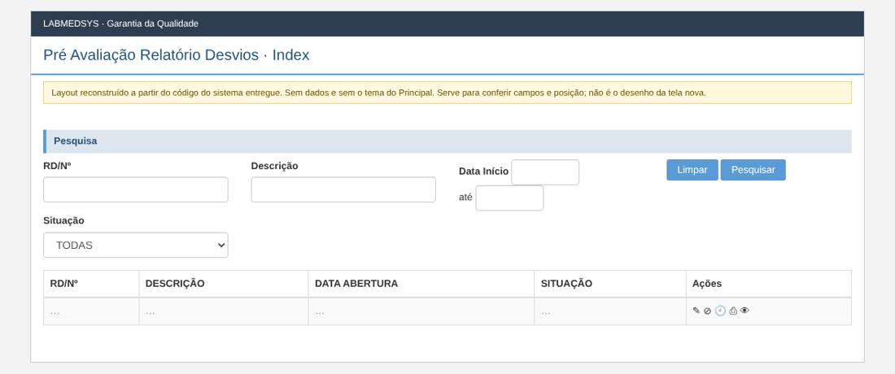
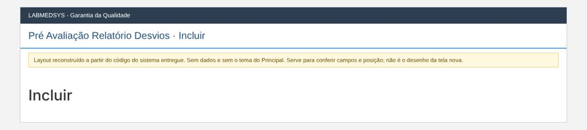
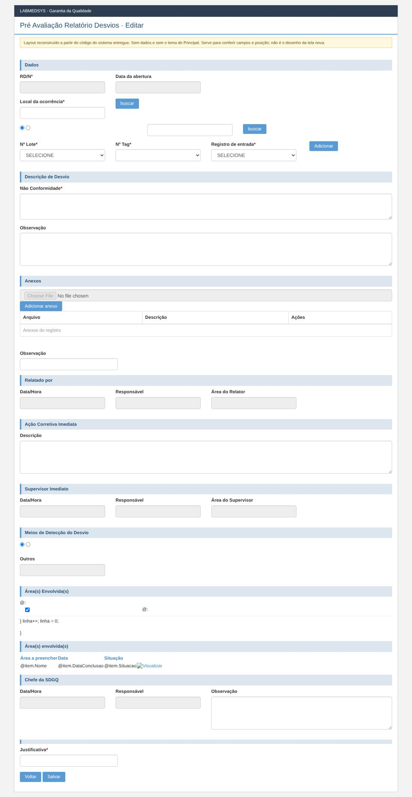
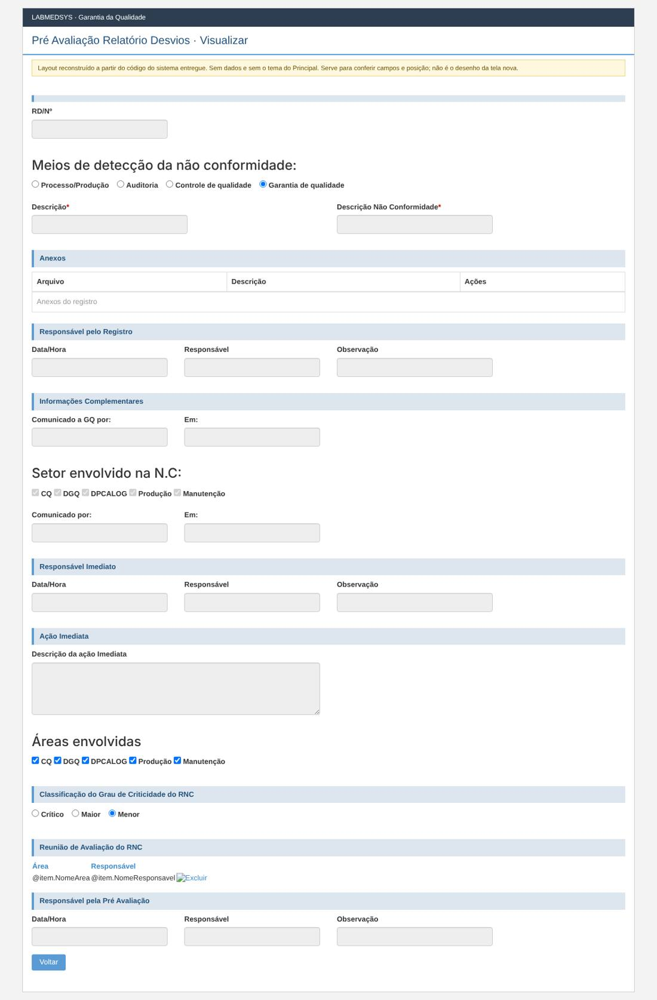

Menu: Garantia da Qualidade · Controle de Desvios · Ficha: completa, a validar com a Garantia da Qualidade · Origem no sistema entregue: PreAvaliacaoRNC
As telas novas seguem o processo e as regras do sistema entregue, sem transcrever o que for falha de código, de conceito ou de campo mal colocado. Cada decisão na ficha é Manter, Corrigir ou Ideal depois.
Como é a tela no sistema entregue (layout reconstruído)
Reconstruído a partir do código das páginas do sistema entregue: mostra os campos, os rótulos, os asteriscos de obrigatório e a posição. Não tem dados e não usa o tema do Principal; os prints reais estão logo abaixo. Opções marcadas por padrão (caixas e botões de opção) são do código, não de dados.
Lista

Incluir

Editar

Visualizar

Ficha da tela nova
Mesma regra de trabalho das fichas 1 e 2: seguir o processo e as regras do sistema entregue, sem transcrever sem analisar. Cada decisão é Manter, Corrigir ou Ideal depois. O que é igual (lista, anexos, lotes, mensagens padrão, PDF) vale como nas fichas anteriores e não se repete.
1. Para que serve
É a terceira etapa do desvio, feita por quem responde pela Garantia da Qualidade (no formulário aparece como Chefe DGQ). A pessoa lê o RD e a ação imediata e decide duas coisas:
- Como o desvio foi detectado (o "meio de detecção").
- Quais áreas ficam envolvidas na avaliação.
O resultado decide o caminho: com áreas escolhidas, o RD vai para Pendente Responsável Área (tela Avaliação Área); sem nenhuma área, vai direto para Pendente Avaliação do Relatório de Desvios.
Lugar no processo: Relatório de Desvios → Registro Ação Corretiva Imediata → Pré Avaliação → Avaliação Área (se houver áreas) → Avaliação do Relatório → CAPA e planos.
2. Páginas da tela
| Página | O que mostra |
|---|---|
| Lista | RDs na etapa, com filtros |
| Editar (pré-avaliar) | O RD, a ação imediata e as seções "Meios de Detecção do Desvio", "Área(s) Envolvida(s)" e o bloco da pré-avaliação |
| Visualizar | O RD somente leitura |
| Histórico, Imprimir | Como na ficha 1 |
3. Quem pode ver e fazer o quê
No legado (GerenciadorAcessoTelaPreAvaliacaoRNCIndex.cs):
- A lista traz só RDs Pendente Pré Avaliação.
- Editar: enquanto o RD ainda não tem pré-avaliação, a regra devolve "pode" para qualquer usuário, sem olhar nível nem área. Só depois de existir uma pré-avaliação é que nível 1 perde o botão e nível 2 só edita da própria área.
- Visualizar, Histórico e Imprimir: qualquer usuário com grupo de perfil.
| Decisão | O que fazer |
|---|---|
| Corrigir | A primeira checagem vence as outras, então hoje qualquer nível pré-avalia (conceito errado: o formulário chama a pessoa de "Chefe DGQ"). Na tela nova a regra vale desde a primeira vez. Validar com a GQ quem pode: a proposta é nível 3 e 4. |
| Corrigir | O servidor aplica a regra em toda ação, como nas fichas 1 e 2. |
4. Lista
| Campo | Regra no legado | Decisão |
|---|---|---|
| RD/Nº | Texto "contém" (sem a leitura de número/AA que as telas 1 e 2 têm). |
Corrigir: igual às fichas 1 e 2 (número exato, ano opcional). |
| Descrição, Data início, Data fim | Como na ficha 1. | Corrigir como na ficha 1. |
| Situação | O filtro aparece na tela mas o servidor o ignora (está em comentário no código); a lista já é só "Pendente Pré Avaliação". | Corrigir: tirar o filtro desta tela. |
| Meios de Detecção | Não existe aqui. | — |
Colunas e ações por linha: como na ficha 1. Corrigir a paginação no servidor.
5. Formulário
Relato do RD, ação imediata, anexos: vêm das etapas anteriores.
| Decisão | O que fazer |
|---|---|
| Corrigir | O relato (descrição, local, item, lotes, observação) fica somente leitura. Hoje a gravação regrava todos esses campos. |
| Corrigir | A descrição da ação imediata também fica somente leitura. Hoje, se vier texto, a gravação substitui o que o supervisor da área escreveu. Quem não concordar com a ação deve dizer isso na observação da pré-avaliação. |
| Validar com a GQ | Anexos: acrescentar sim; apagar os de etapas anteriores, não. |
Seção "Meios de Detecção do Desvio":
| Campo | Tipo | Obrig. | Regra | Decisão |
|---|---|---|---|---|
| Meio de detecção | opção única | Sim | Valores: Processo/Produção, Auditoria Interna, Inspeção Sanitária, Controle da Qualidade, Garantia da Qualidade, SAC/Fármaco, Outros (99). Servidor: "Meio de Detecção da não conformidade é obrigatório." | Manter |
| Outros (texto) | texto | Só se o meio for "Outros" | Habilitado só com "Outros". Servidor: "É obrigatório informar um Meio de Detecção da não conformidade no campo Outros." | Manter; Corrigir limite de tamanho. |
Seção "Área(s) Envolvida(s)":
| Campo | Tipo | Obrig. | Regra | Decisão |
|---|---|---|---|---|
| Áreas | caixas de marcar, 3 por linha | Não | Lista de todas as áreas do Principal. Marcou: o RD vai a Pendente Responsável Área; nenhuma: vai a Pendente Avaliação do Relatório de Desvios. A gravação soma as áreas escolhidas às que já existirem, sem conferir repetição. | Manter o desvio de caminho. Corrigir: não duplicar área; mostrar na tela, antes de gravar, para onde o RD vai ("Vai para a avaliação das áreas" ou "Vai direto para a avaliação do relatório"). |
Bloco da pré-avaliação:
| Campo | Tipo | Obrig. | Regra e origem | Decisão |
|---|---|---|---|---|
| Observação da pré-avaliação | texto longo | Não | Sem validação. | Manter; Validar: deve ser obrigatória quando se muda a ação ou se envolve área? |
| Data e hora | só leitura | — | O servidor grava o valor que vier da tela (DateTime.Parse(model.DataHoraPreAvaliacaoRDChefeDGQ)). Validação: "A Data de criação é obrigatória." |
Corrigir: hora do servidor. |
| Responsável | só leitura | — | Usuário logado; validação "O Responsavel é obrigatório." | Manter (sempre da sessão). |
| Justificativa | texto | Sim, ao gravar | Regra do RD (ficha 1). | Corrigir, como na ficha 2 (depende da resposta da GQ). |
6. Ações e regras
| Ação | O que acontece | Decisão |
|---|---|---|
| Gravar a pré-avaliação | Valida; guarda o meio de detecção, o responsável, a data e a observação; guarda as áreas; muda a situação conforme a seção 1; grava histórico (antes e depois), mas sem a justificativa digitada (o código manda justificativa vazia); "Alteração efetuada com sucesso." | Manter; Corrigir histórico com a justificativa. |
| Autor do RD | A gravação troca o responsável do RD pelo usuário que pré-avaliou (a pré-avaliação tem o seu próprio responsável). | Corrigir, como na ficha 2: o autor não muda. |
| Cancelar | Não existe nesta tela. | Validar com a GQ: o RD só pode ser cancelado nas etapas 1 e 2? Depois disso, sem saída? |
| Visualizar, Imprimir, Histórico | Como na ficha 1. | Manter |
7. Situação e histórico
| Evento | Situação depois | Histórico |
|---|---|---|
| Gravar com áreas envolvidas | Pendente Responsável Área | Sim |
| Gravar sem áreas | Pendente Avaliação Relatório de Desvios | Sim |
8. Mensagens (do servidor)
Meio de Detecção da não conformidade é obrigatório. · É obrigatório informar um Meio de Detecção da não conformidade no campo Outros. · A Data de criação é obrigatória. · O Responsavel é obrigatório. · Descrição da ação imediata é obrigatória. · Mais as do RD (ficha 1). Corrigir os textos como na ficha 1.
9. Integrações
Lê o Principal (usuário, áreas, equipamento/TAG) e a Produção e o Estoque (item e lote), como nas fichas anteriores. Ideal depois: avisar por e-mail ou notificação as áreas escolhidas (hoje ninguém é avisado, RN-GQ-009).
10. Casos de teste de aceite
Do plano da GQ: CT-GQ-009 (pré-avaliar o desvio e conferir situação, data e histórico) e CT-GQ-010 (conferir que não há classificação de risco). Casos novos: só nível 3 e 4 pré-avaliam; relato e ação imediata somente leitura; meio "Outros" sem texto é recusado; escolher área leva a Avaliação Área; não escolher leva à Avaliação do Relatório; área escolhida duas vezes não duplica; hora e responsável vêm do servidor; o filtro de situação não aparece.
11. Pontos para a Garantia da Qualidade validar
- Quem pode pré-avaliar: nível 3 e 4? (Hoje, qualquer um.)
- A observação da pré-avaliação deve ser obrigatória?
- O RD pode ser cancelado depois da etapa 2? Por quem?
- Escolher áreas é opcional de propósito? Qual é a regra para decidir?
- O meio de detecção só é conhecido aqui. Os filtros "Meios de Detecção" das telas 1 e 2 ficam vazios até esta etapa: tirá-los dessas telas?
- Classificação do desvio por criticidade (crítico, maior, menor): o legado só pede isso na etapa do CAPA. Fica assim?
12. Para a API (a confirmar com o contrato do desenvolvimento)
Listar RDs pendentes de pré-avaliação; obter o RD; gravar a pré-avaliação (meio de detecção, texto de "Outros", áreas envolvidas, observação, justificativa) com validação por campo e resposta dizendo a nova situação; histórico; lista de meios de detecção e de áreas. Hora e responsável vêm do servidor.